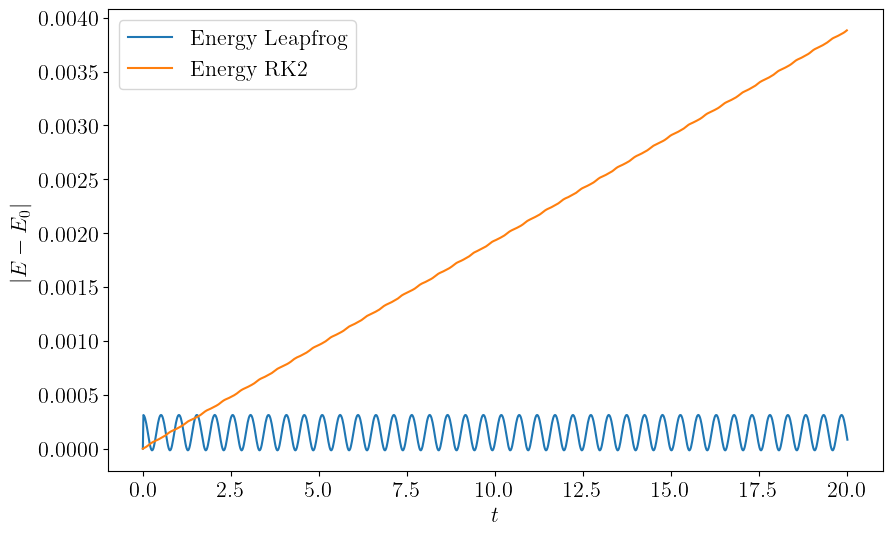

Runge-Kutta is a very powerful family of methods for solving ODEs, but it is not the only one. There are many other methods that can be used to solve ODEs, and some of them are more efficient than Runge-Kutta for certain types of problems.
Runge-Kutta methods use the values of $x$ and $y$ at step $n$ to calculate the value of $y$ at step $n+1$. For example RK4:
$$ y_{n+1} = y_n + \frac{1}{6}h(k_1 + 2k_2 + 2k_3 + k_4) $$Although $k_1$ through $k_4$ makes estimates between $n$ and $n+1$, they all use values starting at $x_n$ and $y_n$
Multi-step methods use the values of $x$ and $y$ at step $n$ and a few prior steps to calculate the value of $y$ at step $n+1$. For example:
$$ y_{n+1} = y_n + h(\beta_0 y'_{n+1} + \beta_1 y'_n + \beta_2 y'_{n-1} + \beta_3 y'_{n-2} + \dots) $$$y'_{n} = f(x_n, y_n)$ is the derivative of $y$ evaluated at step $n$. The number of points kept in the bracket determines the order of accuracy of the method.
If $\beta_0$ is non-zero, this is an implicit method and needs to solve a nonlinear equation each step.
What if we don't want to solve a nonlinear equation every step?
One popular strategy is to first use an explicit formula ($\beta_0 = 0$) to "predict" a value of $y_{n+1}$, then use the an implicit formula ($\beta_0 \neq 0$) with the predicted $y_{n+1}$.
The first step is called a "predictor step", and the second is called a "corrector step". This kind of method is called a Predictor-Corrector Method.
For example, this is the 3-step Adams-Bashforth predictor:
$$ y_{n+1} = y_n + \frac{h}{12}(23 y'_n - 16 y'_{n-1} + 5 y'_{n-2}) + O(h^4) $$This is the accompanying Adams-Moulton corrector:
$$ y_{n+1} = y_n + \frac{h}{12}(5 y'_{n+1} + 8 y'_n - y'_{n-1}) + O(h^4) $$This is a 3rd order method, with error term $\varepsilon = O(h^4)$.
The 4th-order version of the Adams-Bashforth-Moulton method is:
$$ \begin{align} y_{n+1} &= y_n + \frac{h}{24}(55 y'_n - 59 y'_{n-1} + 37 y'_{n-2} - 9 y'_{n-3}) + O(h^5) \\ y_{n+1} &= y_n + \frac{h}{24}(9 y'_{n+1} + 19 y'_n - 5 y'_{n-1} + y'_{n-2}) + O(h^5) \end{align} $$Again, the first line is the "predictor", and second line is the "corrector".
In summary, a Predictor-Corrector method typically:
The whole method can be denoted $PEC$. The corrector can be repeated multiple times for stiff problems, so we can do $P(EC)^m$.
Predictor-Corrector methods are very efficient and relatively simple to implement. You just need to keep track of a few previous values of $y'_n$. However, there are two problems:
Instead of forming combinations of $y_{n-i}'$ on the right hand side, one can form combinations of $y_{n+i}$ on the left hand side:
$$ \alpha_0 y_n + \alpha_1 y_{n+1} + \dots + \alpha_s y_{n+s} = h \beta f(x_{n+s}, y_{n+s}) $$For example, the 1-step BDF method is:
$$ y_{n+1} - y_n = h f(x_{n+1}, y_{n+1}) $$This is essentially the implicit Euler method you implemented in the homework.
The 2-step BDF method (BDF2) is: $$ y_{n+2} - \frac{4}{3}y_{n+1} + \frac{1}{3}y_n = \frac{2}{3}h f(x_{n+2}, y_{n+2}) $$
The 3-step BDF method (BDF3) is: $$ y_{n+3} - \frac{18}{11}y_{n+2} + \frac{9}{11}y_{n+1} - \frac{2}{11}y_n = \frac{6}{11}h f(x_{n+3}, y_{n+3}) $$
BDF methods are typically implemented fully implicitly, which makes them suitable for stiff ODEs. A series of 6 stable methods can be defined, and one can use their differences to estimate error for variable step size control.
Again, similar to ordinary multistep methods, changing the step size can be awkward. Typically an alternative formulation which allows variable step sizes is used in production codes.
Recall the midpoint method:
$$ \begin{align} k_1 &= f(x, y) \\ k_2 &= f(x + h/2, y + (h/2) k_1) \\ y(x + h) &\approx y(x) + h k_2 \end{align} $$$k_2$ is an estimate of the derivative at the midpoint, both in $x$ and in $y$.
Let's rewrite the method in a slightly more suggestive way:
$$ \begin{align} y(x) &= y(x) \\ y(x + h/2) &= y(x) + (h/2) f(x, y) \\ y(x + h) &= y(x) + h f\left(x + h/2, y(x + h/2)\right) \\ \end{align} $$What happens at the next step?
The update from $y(x + h/2)$ to $y(x + 3h/2)$ is notably different from the update from $y(x)$ to $y(x + h)$.
Let's remedy the asymmetry by reusing the value of $y(x + h/2)$:
$$ \begin{align} y(x + h) &= y(x) + h f\left(x + h/2, y(x + h/2)\right) \\ y(x + 3h/2) &= y(x + h/2) + h f\left(x + h, y(x + h)\right) \\ \end{align} $$This method "leapfrogs" over every half-step. What is the order of accuracy?
Why bother with another method with the same order of accuracy?
The leapfrog method has time-reversal symmetry:
$$ \begin{align} y(x - h) &= y(x) - h f\left(x - h/2, y(x - h/2)\right) \\ y(x - 3h/2) &= y(x - h/2) - h f\left(x - h, y(x - h)\right) \end{align} $$Setting $x \to x + 3h/2$, we get:
$$ \begin{align} y(x + h/2) &= y(x + 3h/2) - h f\left(x + h, y(x + h)\right) \\ y(x) &= y(x + h) - h f\left(x + h/2, y(x + h/2)\right) \end{align} $$These equations are just leapfrog method re-arranged.
Time-reversal symmetry typically means that the method conserves energy. This method belongs to a larger family of symplectic methods.
The leapfrog method is also known as Verlet integration. Verlet integraion typically refers to a special case for second-order differential equations of the form:
$$ \frac{d^2 x}{dt^2} = f(x) $$If we perform the usual reduction of order, we have two first order equations:
$$ \frac{dx}{dt} = v(t),\quad \frac{dv}{dt} = f(x) $$Verlet integration is simply Leapfrog method applied to these two equations:
$$ \begin{align} x(t + h) &= x(t) + h v(t + h/2) \\ v(t + 3h/2) &= v(t + h/2) + h f(x(t + h)) \end{align} $$Note that you will need to jump-start the first step similar to Leapfrog:
$$ v(h/2) = v_0 + (h/2) f(x_0) $$Verlet integration is a second order method. We can construct higher order integrators for general separable Hamiltonian systems:
$$ H(p, q) = T(p) + V(q) $$by taking $k$ substeps:
$$ \begin{align} q_{i+1} &= q_i + h c_i \frac{\partial T}{\partial p}(p_i) \\ p_{i+1} &= p_i - h d_i \frac{\partial V}{\partial q}(q_{i+1}) \end{align} $$For a given order of accuracy, the coefficients $c_i$ and $d_i$ need to be solved for (e.g. Yoshida 1990).